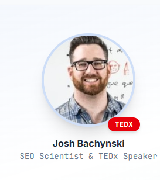

SEO educator / researcher / TEDx speaker
Josh Bachynski
The podcast guest who makes Google’s hardest changes clear—and shows what the evidence says.
Why producers book Josh
He turns complicated SEO claims into clear, testable lessons.
Josh has worked in search since 1997, built a career around controlled ranking experiments, and spent more than a decade helping marketers understand how Google’s systems behave.
“A no-nonsense, data-driven approach… scientifically proving or disproving many SEO myths.”
Search Engine Roundtable, 2018
Podcast experience
An experienced teacher who knows how to make long-form work.
What Josh brings to the mic
Complex subjects, explained clearly
Seven difficult topics, ready for your audience.
Choose a focused SEO lesson or connect search, AI, economics and ethics in a conversation that stays clear, useful and memorable.
01What actually ranks in AI search
How AI Overviews, answer engines, entity trust, consensus and information gain change the work—without pretending every old ranking factor disappeared.
02How testing clarifies conflicting SEO advice
What isolated ranking tests reveal, why SEO folklore survives, and how marketers can distinguish correlation, policy statements and observable results.
03Why major sites lose search visibility
A forensic discussion of intent mismatch, over-optimization, site-wide quality signals, technical duplication and the false security of brand authority.
04How Google’s incentives shape the open web
The issue Josh took to TEDx: what happens when one private company mediates discovery, commerce and public knowledge at global scale.
05AI usefulness without AI mythology
Where current systems produce genuine leverage, where confident language hides weak reasoning, and what businesses should understand about agents and automation.
06Can an AI be self-aware?
A philosopher’s explanation of measurable self-awareness, the Bachynski Test, Kassandra, AI alignment and the assumptions people bring to questions about machine minds.
07A broader Josh episode
Philosophy, meditation, neurodivergence, martial arts, creativity, information warfare and the future of work—supported by years of long-form hosting experience.

Teaching beyond the SEO industry
He questioned Google’s power before AI search made the question unavoidable.
Josh’s 2016 TEDxOmagh talk, The Future of Google, Search, and Ethics, examined the consequences of allowing a private ranking system to govern access to information and opportunity.
Beyond the podcast circuit
The work has reached TEDx, Moz and major interview publishers.
Selected appearances
Proven in long-form.
91 podcast appearances across specialist industry shows and general-interest programs.
He understands the host’s job
Years behind the microphone.
Josh knows how to explain complex ideas, develop a follow-up, respect a format and give an editor usable moments.
White Hat vs. Black Hat SEO
Long-form search analysis and a YouTube audience cited at more than 16,000 subscribers.
2020—2026Comic vs. Philosopher
91 long-form episodes about ideas, culture, morality and human behavior.
2020—2026Hack Your Brain With Meditation
84 episodes connecting philosophy, meditation, neuroscience and personal change.
2026SEO + AI = Success
Six current episodes and 21,000+ downloads on forensic SEO and AI ranking analysis.
Short biography
Search researcher. Educator. Philosopher.
Josh Bachynski has worked in search since 1997 and is the founder of Underground SEO University and CEO of Be Found Everywhere.
He holds a master’s degree in philosophy and undertook doctoral research in ethics and rational decision theory. His background includes teaching across six institutions, conference presentations from Sacramento to Poznań, independent AI research, SEO software development and more than a decade of public commentary on Google’s algorithms and incentives.
That combination lets Josh move between practical ranking evidence and the larger questions most SEO conversations leave unexplored.
Book an episode with substance
Give your audience clarity they will remember.
Available for remote podcast and video interviews about SEO, Google, AI search, technology ethics, philosophy and the future of information.
Email media@joshbachynski.com